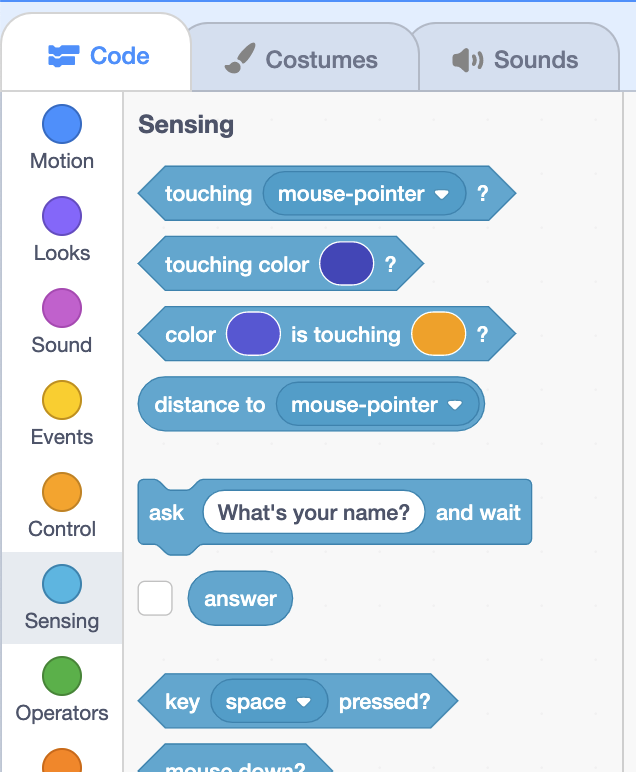
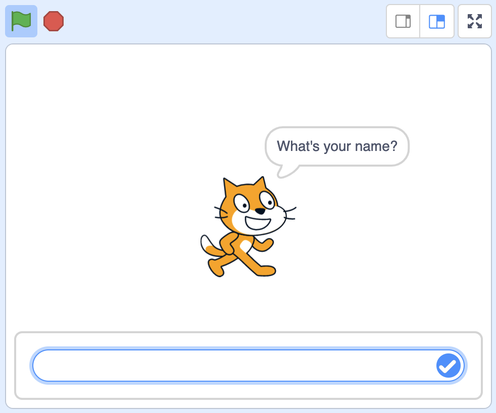
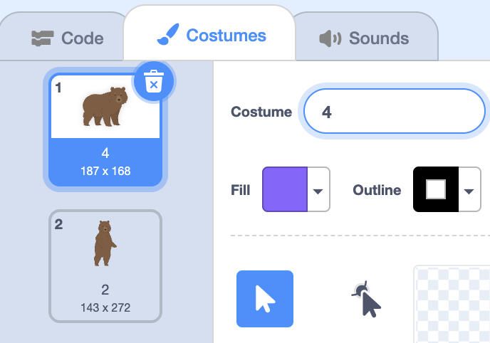
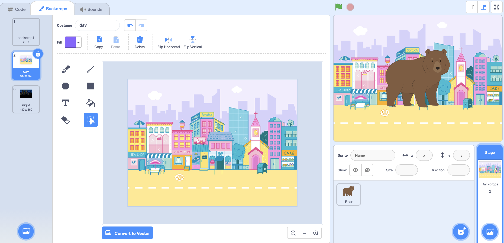

Values
Last 时间
- Last 时间, we took a look at events, where our code can respond to something that happens, like the green flag being clicked.
- This 时间, we’ll take a closer look at functions, or our code, that responds to these events.
Values
- Recall that some of our functions, can take one or 更多 inputs, or some type of information, that goes into ovals:
move (10) steps- This “move” block, for 示例, has an oval with the value of 10, which tells our sprite to move 10 steps.
- We can change this value, the actual number, to be something bigger or smaller.
- With other blocks, like the “say” block, we can use words as an input as well.
- It turns out that Scratch has blocks that are themselves values, which we can use. In the bottom of the Motion category of blocks, we see some oval blocks:
x position y position direction- Since they’re not rectangular, we can’t stack them with the rectangular blocks we’ve been using so far.
- Instead, we can place these blocks inside the ovals of other blocks, using them as values for inputs.
Position
- We’ll tell our sprite to say its x position, or how far it is to the left or right of the stage, for two seconds:
when green flag clicked say (x position) for (2) seconds- Now, when we click the flag, our cat says its current x position. If we move our cat around the stage, we can see it say a different number when we click the flag again.
- We’ll add another block so we can see our cat’s x position and y position:
when green flag clicked say (x position) for (2) seconds say (y position) for (2) seconds
Operators
- Operators are another category of blocks, and a concept within 编程 更多 generally. An operator takes in values as input, and produces a new value.
- For 示例, one operator is the “+” block:
() + ()- This operator will take two values, like 1 and 2, and add them together.
- We can see this with:
when green flag clicked say ((1) + (2)) for (2) seconds- Notice that our green “+” operator block will calculate a value based on its own inputs, 3, and that in turn will be used as the value for the “say” block for our cat.
- We can use another block, “join”, to put two words or characters together:
when green flag clicked say (join (x position) (y position)) for (2) seconds- Now, we can say both the x position and y position in the same “say” block, since the “join” block will put them together for us.
- But when we click the flag, the positions are added together, like “-161-13”.
- We’ll change the backdrop to “Xy-grid”, just so we can visualize our cat’s position, and the cat is indeed at negative 161 and negative 13. But we want to separate our values with a comma, so we can see this 更多 easily.
- We’ll need another “join” block, where we join x position with the y position joined with a comma and a space:
when green flag clicked say (join (x position) (join [, ] (y position))) for (2) seconds- So, all together, these blocks combine the x position with a comma, space, and then the y position.
- We can add yet another “join” block to form a complete sentence:
when green flag clicked say (join [I am at] (join (x position) (join [, ] (y position)))) for (2) seconds - Now, we’ve created the Position 示例.
- We can also use the “direction” block for our cat to say the direction it’s facing.
Moving by size
- In the bottom of the Looks category of blocks, we see a few 更多 oval blocks, which means we can use them as inputs as well.
- There’s one called “size”, and that will just represent how big or small our sprite is.
- Let’s use the hedgehog as our sprite, and we’ll use blocks to make it move 10 steps every 时间 the right arrow key is pressed in Walking Hedgehog:
when [right arrow v] key pressed move (10) steps - But if we change the size of the hedgehog, we want it to move 更多 or 较少 every 时间 depending on whether it’s bigger or smaller.
- We’ll drag the “size” block in as the value:
when [right arrow v] key pressed move (size) steps- But since our hedgehog starts at 100% size, it’s moving 100 steps at a 时间.
- We can use the “/” block in the Operators category, which performs division. So we’ll drag that in, and drag our “size” block in it as well:
when [right arrow v] key pressed move ((size) / (10)) steps- We’ll divide the size by 10, so at 100% size, our hedgehog will move 10 steps, but at 50% size, it will only move 5 steps.
Pick random
- Another block in the Operators category, “pick random”, will pick a random number for us.
- We’ll try it out by telling our hedgehog to point into a random direction every 时间 the flag is clicked, in Rotating Hedgehog:
when green flag clicked point in direction (pick random (0) to (90))- Now, every 时间 we press the green flag, our hedgehog will do something surprising, where it won’t necessarily do the same thing every 时间.
Timer, round
- Another value we see, in the Sensing category of blocks, is called “timer”. The value of “timer” will be the number of seconds since we started our 项目, so we’ll have the the hedgehog say it every 时间 it’s clicked, in Timing Hedgehog:
when this sprite clicked say (timer) for (2) seconds- Now, after we click the green flag, we can click the hedgehog to see the number of seconds, like 4.45 or 9.90.
- We don’t want to see the number of seconds in so much detail, so we’ll look for the “round” block in the Operators category. The “round” block will take a number as input, and rounds it to a whole number.
- So we can drag our “timer” block inside a “round” block, and now our hedgehog will say a whole number of seconds:
when this sprite clicked say (round (timer)) for (2) seconds
Sensing
- In the Sensing 小组课, we see another block, “ask what’s your 姓名? and wait”. The oval indicates an input to the function block, and in this case, “What’s your 姓名?” tells the block to use that as the 问题.
- It turns out that this block also has an output, or return value, that comes 返回 after we run it.
- We see that underneath this block, there is an oval “答案” block that will be the value of whatever the user types in as a response to this 问题:

- Let’s see this by building a program called 你好:
when green flag clicked ask [What's your name?] and wait say (answer) for (2) seconds- Now, when we run our program, our cat will ask the 问题 and wait for us to type in a response before continuing:

- Now, when we run our program, our cat will ask the 问题 and wait for us to type in a response before continuing:
- We can make our cat be a little 更多 friendly with the “join” block:
when green flag clicked ask [What's your name?] and wait say (join [Hello,] (answer)) for (2) seconds - Let’s change the 问题 to “How many steps?”:
when green flag clicked ask [How many steps?] and wait move (answer) steps- We’ll also use a “move” block, and inside of it, use the “答案” block as the input. So our cat will move the number of steps that we type in as an 答案 to the 问题.
- We can tell our cat to go to a specific position, too, by asking for the x-value and y-value in Where to go?:
when green flag clicked ask [Pick x] and wait set x to (answer) ask [Pick y] and wait set y to (answer)- Notice that we can ask multiple 问题, and the “答案” block will have the value of whatever we typed in for the most recent 问题.
Changing costumes
- We’ll remove our cat for now, and add the bear again. We can rename its costumes in the Costumes tab:

- We’ll call the costume with the bear on all four of its legs “4”, and the other costume on two legs “2”.
- Now, we can build a program, How many legs? that asks us which costume to use:
when green flag clicked ask [How many legs?] and wait switch costume to (answer)- It turns out that the “switch costume” block can take in an oval block as input as well, so now our 答案 will be used as the value for the 姓名 of the costume that our bear will switch to.
Changing backdrops
- We can try this with backdrops. We’ll add “Colorful City” and “Night City” as our backdrops, and by clicking on the Stage panel in the bottom right, we can 打开 the Backdrops tab to rename them:

- We’ll call the backdrop with the city in daytime “day”, and the backdrop of nighttime “night”.
- In What 时间?, we’ll create the bear’s script:
when green flag clicked ask [What time?] and wait switch backdrop to (answer)- Now, when we respond with “day” or “night” as the 答案, the backdrop will change.
- With these blocks that allow the user to respond to 问题, and for our code to use their 答案 as inputs to functions, we can give the user even 更多 control and make our 项目 much 更多 interesting.